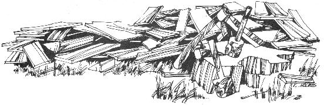

I picked up the November 1973 issue of MOTHER at a friend's cabin yesterday and began scanning it . . . as I usually do any time I find an unguarded MOTHER lying around. Robert Simonson's article, "The Froe and You: How to Make Hand-split Shakes", immediately engrossed me. For the last three years I've lived in the rain forest of the Olympic Peninsula in Washington State and derived my entire income from working in cedar salvage. I've done everything from cutting cedar shake and shingle blocks to handsplitting tapered shakes.
As Simonson suggests, handsplitting shakes or boards is, indeed, the most inexpensive way of roofing and covering walls from downed timber . . . as long as you have a cheap source of material. Also, the axe, saw and other tools needed to cut shakes will continue to be useful around the farm long after they've served their initial purpose. Still, I found some of Simonson's remarks to be misleading and incomplete.
Handsplitting shakes (or "tapers" as they're also called) is a relatively easy task when you're cutting high-quality, straight-grained wood . . . but finding such timber free for the asking or at the $3.00 to $4.00 price that Simonson quoted just doesn't happen. (My experience has been mostly with cedar and spruce-so I'm speaking of shakes coming from these woods-but cedar has by far the best tapering qualities of any timber. It also has the longest life span due to the natural preservatives in the cedar wood).
Unless you happen to be a fortunate soul with your own cedar forest right out the back door of your homestead, you'll discover that "stumpage"-the right to cut timber in a certain area-is darn hard to get. A year or two ago, it was a snap to purchase a few windfalls from the state or the U.S. Forest Service. But small sales are almost impossible to get today . . . due both to government policy changes and to an increase in stumpage rates as the market price of cedar continues to rise. Folks can forget about the $50.00/1,000 board feet (about 1-1/3 cords of wood) that was the average stumpage rate in years past. Most shake mills today are paying $140 to $150 per cord of cedar blocks. (The high prices being paid for cedar, coupled with the fact that there is too much government forest land to police, makes poaching a lucrative endeavor in my region. But the punishment is severe for those unfortunates who get caught.)
Simonson's major error comes in his description of technique used in splitting blocks. In order to get a tapered shake, a woodcutter must flip the block upside down of each shake has been split off. For example, the froe is set the top surface- across the grain approximately 1/2" to 5/8" from the block's edge-and hammered down into the wood. If luck is with you, this first shake will have some taper to it . . . but usually it's as thick at the bottom as it is at the top (what is known as a "shake board"). If this uniform shape is what you're after, you can continue to set the froe 1/2" to 5/8" away from and parallel to the edge of the wood bolt and you'll split nothing but even shake boards. If you're hoping to cut tapers, however, you must flip the block over and split off from the same surface that the first board came from . . . and you will witness a simple but beautiful phenomenon of nature take place if you do this: a perfectly tapered shake.
Shingles cut to be sold to a shake mill are required to be 24", give or take an inch. This standard has been established by the cedar industry, but it also just happens to be the most accommodating length for walls or roofing on houses and similar buildings. Barn shakes are usually split to 4-foot lengths and seldom tapered, but you can get a 4-foot tapered shake by setting the froe at least one inch away from the edge of your wood bolt (the extra width ensures that the shake won't taper out three-fourths of the way down the block).
My final argument with Simonson's article is his estimate that "20 feet of good straight timber will yield about 20 'squares' of shakes". One 128-cubic-foot cord of suitable wood will yield at least 50 bundles of tapers (that is, 10 square feet) and sometimes as many as 60 or 65 bundles. But a log may contain a good deal of "spalt" (waste such as bark, knots, twisted wood and rot) . . . so measuring the volume of the finished blocks will give a much more accurate picture of the final shake yield than you can get by measuring the length and/or diameter of a log.
I hope this additional information will assist those who-in bewilderment-have found themselves unable to split shakes by using Simonson's technique . . . or to buy high-quality timbers for only a few bucks apiece.
Howard Pearson
Ocean City, Washington
|
|
 |
|